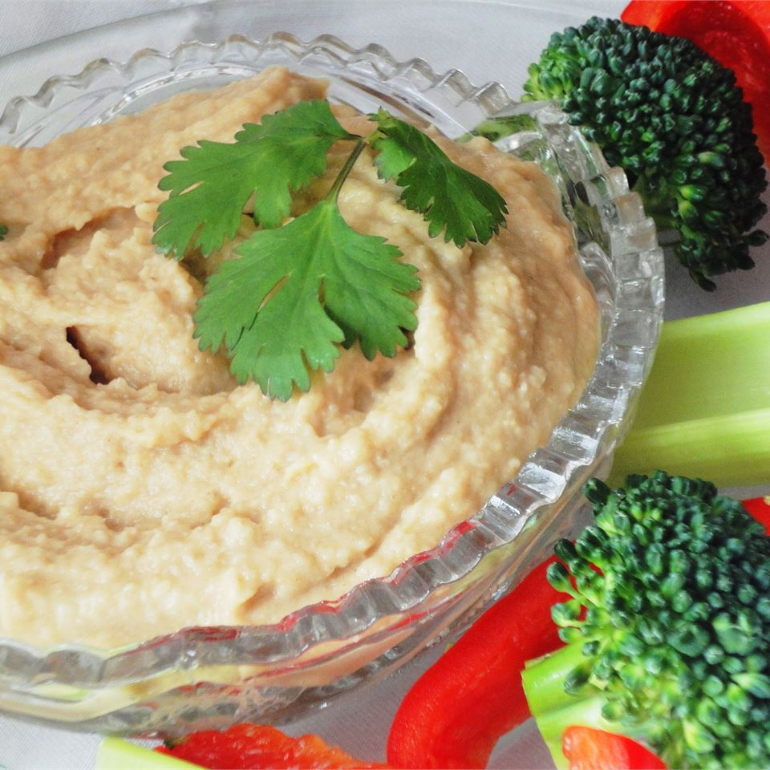

Extra Easy Hummus

Hummus is a Middle-Eastern spread/dip made from chickpeas.
It's a great side dish for almost anything. Hummus goes well with most appetizers and is frequently used as a dipping sauce with bread.
Ingredients
4 servings
- 1 (15 ounce) can garbanzo beans, drained, liquid reserved
- 1 clove garlic, crushed
- 2 teaspoons ground cumin
- 1/2 teaspoon salt
- 1 tablespoon olive oil
Steps
- In a blender or food processor combine garbanzo beans, garlic, cumin, salt and olive oil. Blend on low speed, gradually adding reserved bean liquid, until desired consistency is achieved.
- Serve and enjoy!